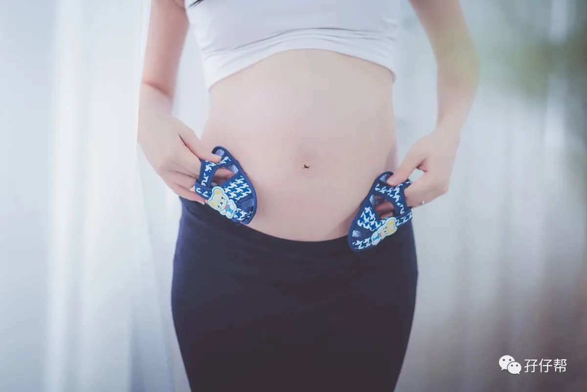
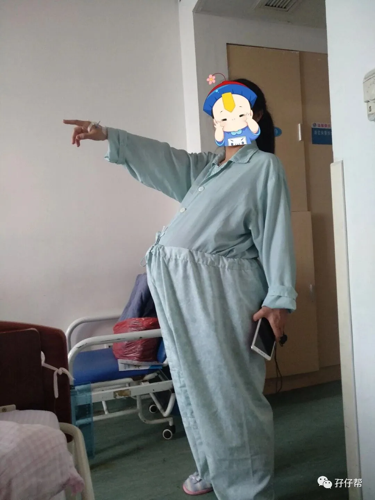
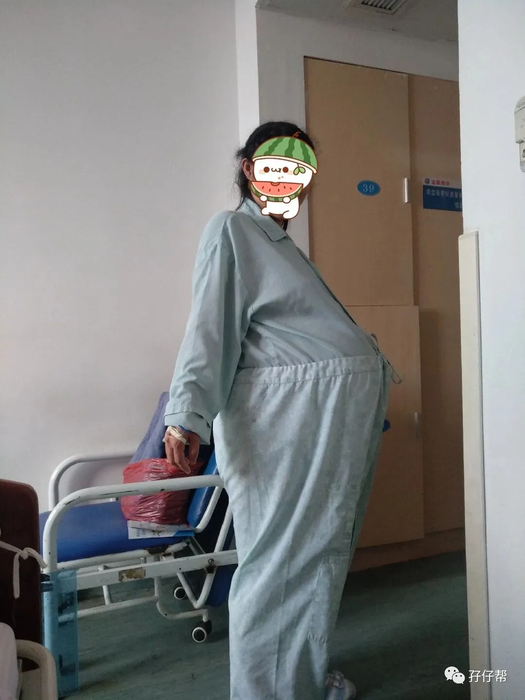

图文|双胞胎爆米花&嘎嘣豆妈妈
【帮主】圆圈妈妈：
这是孖仔帮双胎专栏【孖妈来了】的第二篇文章，来自双胞胎爆米花&嘎嘣豆妈妈的投稿。文章非常幽默风趣，双胞胎顺产如此让人细思极恐的事情，在她的描述下变得那么轻松简单。
一起来看看双胞胎爆米花&嘎嘣豆妈妈的喜剧式顺产经历吧！
· 正 · 文 · 来 · 啦 ·
双胞胎爆米花&嘎嘣豆妈妈@浅夏微凉：
我是单绒双羊双胞胎妈妈，37周+5顺产，生下一对同卵双胞胎儿子，5.8斤/5.6斤。这一路走来虽然不够佛系，但也算心态良好。
我想，我能成功挑战顺产生下双胞胎大部分原因是，我有一颗正能量的心态和坚定的信念，尤其是在面对胎位不正，医生强烈要求剖腹产时，我对自己和两个崽儿们充满了必胜的信心！
【01】
为顺产目标而奋斗
我孕前一直有坚持锻炼身体，得知怀孕后也没当一回事，不就是怀个孕嘛，但当得知肚里是非同寻常的双蛋黄时，我再也不敢嘚瑟了，悄悄地收起了我的所有装备，努力给两个宝贝创造最安全的生长环境，我不想因为我的疏忽，让宝宝们处在危险境地。
孕早期，了解到单绒双羊的所有风险，我也做好了最坏的准备，我一直相信一点，做最坏的打算，往最好的目标努力。因为我要知道，万一宝宝们出现了各种风险，我应该第一时间做什么，去哪里，找哪个医生，这样，我才会心里踏实，敢于迎接未来的一切。
孕晚期，我也看过很多过来人的经验，了解了剖腹产和顺产的各种风险，大致清楚每种生产方式医院都会走哪些流程，用到哪些东西。
因为提前做好了各种功课，住院时我没有丝毫慌张，即便是医生与我术前谈话，提起那些并发症时，我依然淡定自若。
我的胎位从19周开始就是双头位，对于怕挨刀（我是真的怕，哈哈）的我来说，我第一反应就是选择顺产，孕33周，我分别去了两家当地的“生产大户”医院咨询分娩方式。
第一家的答复：“你这俩，还是单绒的，还想顺？早点住进来，我好给你剖掉。”
第二家的答复：“目前看，你可以顺，但是还是要看你最后的胎位和住院医生给你的评估。”
嗦嘎！生产医院就确定在第二家吧！于是从那天起，我开始一周一次的定点产检。
【02】
第一次挑战顺产：失败
36+，单位把我赶回来了，是的，我真的是被赶回去的！这样的巨肚怕是谁见了都躲闪不及了！有图有证据！请看下图：
02
01
37+1，我晃晃悠悠地来到生产医院，办理好住院手续，住院医生就一句话甩过来：
“你怎么才来？我们正常37周就要给你处理掉”。
是的，她用的是“处理”，一词，我内心就千万匹骏马（羊驼，驼羊…）奔腾而过。
接着给我开了一系列检查单，做完B超我一看，纳尼？我引以为傲的，顺产第一条件的双头变成了头臀？医生看了单子，直接宣判：
“收拾一下，下午给你手术。”
What？手术？我才不要！任凭医生怎么巴拉巴拉说一堆，emm，我就听了听，但依然很坚决：
“我不剖，明天早上我要加B超，如果还是头臀，我再剖”。
医生感觉被挑衅了，也撂了狠话：
“不可能的，就几个小时了，不会再转了！不要存在幻想了！”
37+2，一大早去B超室，剧情大反转！真的转回来了，居然是双头位。我嘚瑟极了，赶紧把这个“早已被宣判死刑”的消息告诉医生，看到主治医生连续三次打电话找B超医生确认的样子，觉得很过瘾又很庆幸，还好我坚持了，给我们娘仨一个顺其自然的见面机会！
当天下午，我就被推去打催产针了。
生孩子的女人们实在太多了，待产室住不下了，他们直接把我推进了产房，我这边滴着催产素，另一边见证着一个个小生命的诞生，心想着，马上我也可以跟那两位认识264天但却素未谋面的小人儿见面了。
然而…足足六个小时过去了，我的巨肚依然不痛不痒，一点动静都没有，我再次被推回了病房，第一次挑战顺产失败！
37+3，这天是主任查房，给我查了宫颈管，三度成熟（印象中好像一共十三度），说最起码要到四五度，打催产才有效。
晕，我这宫颈还长着呢！这个我在意了一整个孕期的宫颈管，你咋还那么坚挺？
主任说，上球囊吧！
同病房的战友说，如果球囊掉出来了，我就离卸货不远了，好吧，那我就祈祷明天醒过来的时候球囊已经掉了。
【03】
第二次挑战顺产：成功啦！
37+4，我的球囊并没有掉，我也没有等来想象中的宫缩，此时宫口已开0.5cm，很快我又被推进了待产室打催产针。
到了待产室，助产士小姐姐们的第一句话就是：
“你又来了！”
Emm……是的，我又来了，我这个话痨又来了。
第二次挑战顺产开始，8点多待命，9点钟准备给我人工破水。
其实当时我心里也挺忐忑，因为感觉胎儿打嗝咋又变地方了？心想要不要再申请一次B超，果然助产士小姐姐好像看出了我的心思，通知我：
“破水前要再做一次B超！”
我头跟啄木鸟一样：“必须滴！”
B超显示：依然是双头位，但是并排了。
B超医生又再确认了下：还好，有点上下差，不是完全并排。各项指标显示一切按顺产计划进行着，催产素打上，准备人工破水。
操作人工破水的是个男医生：
“你这个也太难了吧！胎头这么高，我试试看能不能给你破吧。”
于是，这位有点胖又带点憨的男医生，卯足劲尝试了两次后，终于破水成功，破完还跟旁边的小姐姐说：
“羊囊膜这么硬，怎么会有提前破水的，一定还是哪里有问题。”
接着，就是各种尿袋，喝水，三指以上打无痛，因为胎头太高，每次宫缩来了我都跟膀胱要炸了一样的难受。
感谢破水前的最后一次B超，让我心里有底，知道大宝的羊水勉强及格，二宝的羊水偏多，但先破水的是大宝，为了不让大宝的羊水流太多，我就拼命喝水（虽然可能这种想法傻傻的），不知道从什么时候开始，翻身的时候再没有大面积的流水了。
晚上7点，医生过来检查：
“怎么还这么硬，这怎么又涨回去了？”
我还来不及问啥意思，医生已经迅速做出解决方案：
“再给你破一次羊水，你的羊囊膜长回去了！”
what？弄啥嘞？这个还带长回去的吗？可能是我的宝贝们还不舍得出来，或者不是很想见客吧！
再次破水之后，羊水哗哗地流，我也有点轻微发烧，送走了一批又一批的战友，眼看着隔壁床都换了三个待产妈妈了，我还在原地打转！
看着刚刚还满员的待产室，最后就剩下不足五个人，我也是……酸了！
我能怎么办？我也好绝望啊！胎头太高了，破水太早了啊！
终于在晚上十二点左右，我被推进了产房，此时我的双胎妊娠已经熬到37周+5天了。
进了产房，助产士让我默默用力，可是我使不上劲，完全没有大便感，我只觉得我的膀胱要炸了。可能用了太久的力气，本来就痔疮的我，突出的更大了。
三个小时，用尽了毕生的力气，老大终于出来了！5.8斤，五分钟后，老二也出来了，5.6斤，评分9分和10分。
哥哥生出来的那一瞬间，我就觉得肚子好舒服，大便好爽，等弟弟也出来，那就是前年老屎彻底出来了，那叫一个痛快。
在产房观察两个小时后，我被推回了病房，躺了一个小时，我就下地尿尿去了，常识告诉我：即使没有太多尿意，也要让自己尽快排尿，防止尿潴留。
顺产果然恢复很快，当天我基本就像没事人一样可以到处溜达了，只是觉得肚子坠坠的不舒服，托着会更好受一些。
双胞胎爆米花&嘎嘣豆妈妈：
想给那些想顺产的妈妈们说，一定要有坚定的信念，相信自己一定能行。当然，一个好的助产士一定是非常重要的。
在胎位合适，身体条件没有问题的前提下，可以先试着顺产，实在不行也不要勉强自己，自己的状态自己最清楚。
在孕期，我们能给宝宝做的，就是吃好喝好睡好，让自己有个好的身体，输送给宝宝足够多的营养，调整好心态，该注意的注意，该宽心的宽心，相信我们的宝宝，他们都在努力成长。他们都那么坚强，那么努力，我们有什么理由让自己脆弱呢！
最后，希望每一个妈妈不管什么方式，都可以顺利生产，母婴同室。
-END-
今日互动话题
#姑娘们，你打算顺产还是剖腹？勇敢说出来吧！#
评论区聊一聊呗！
一关注孖仔帮一


